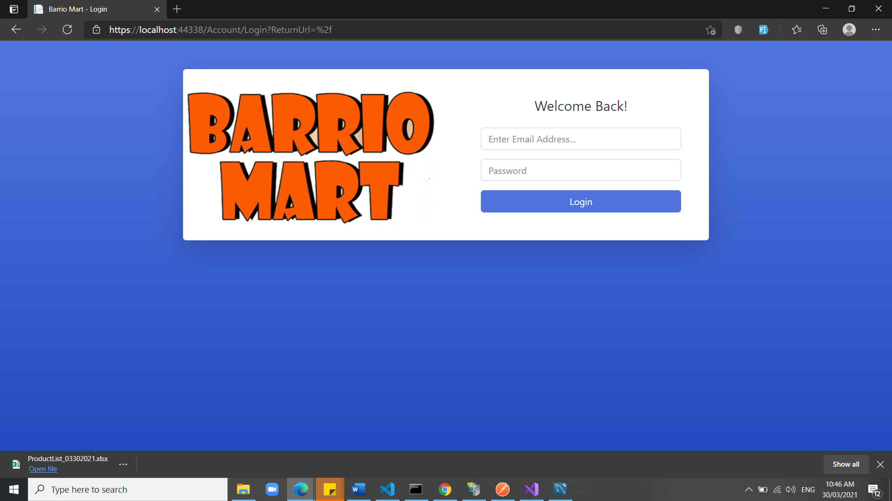
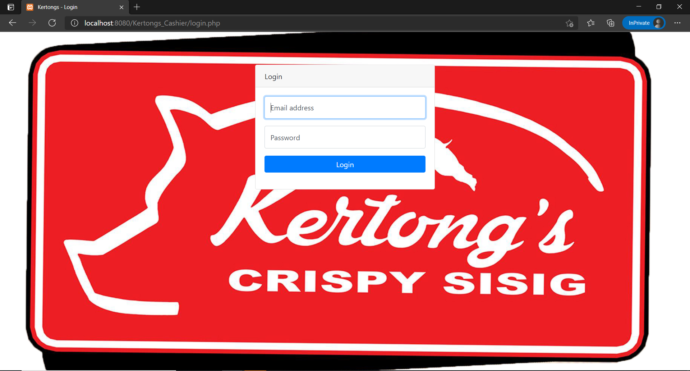
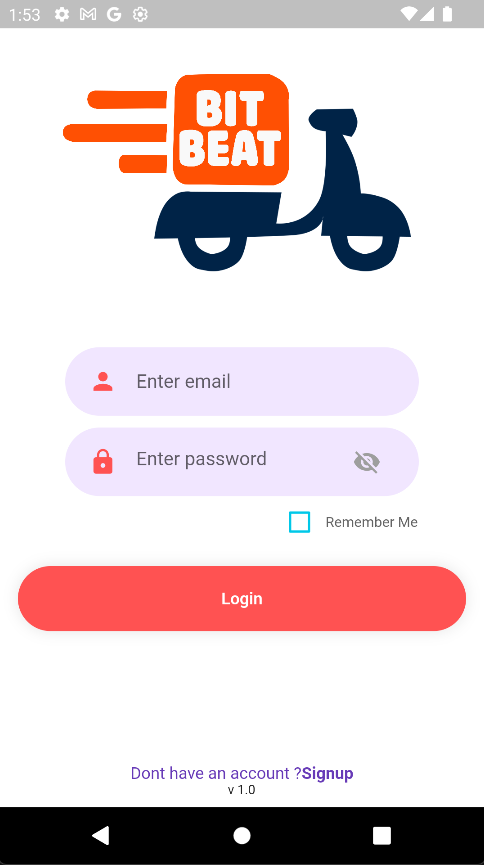
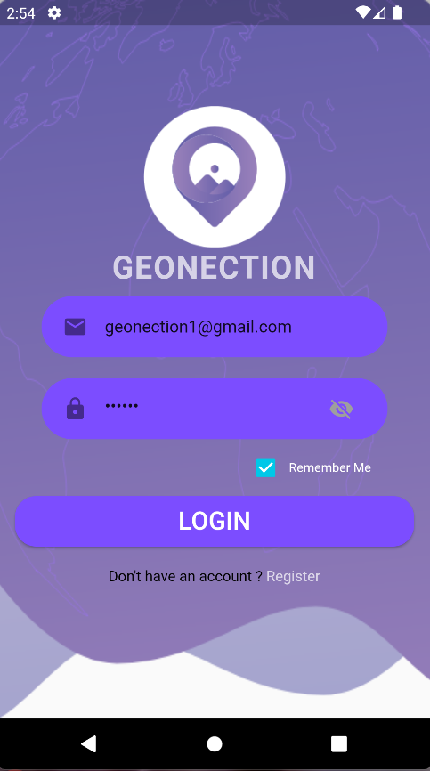
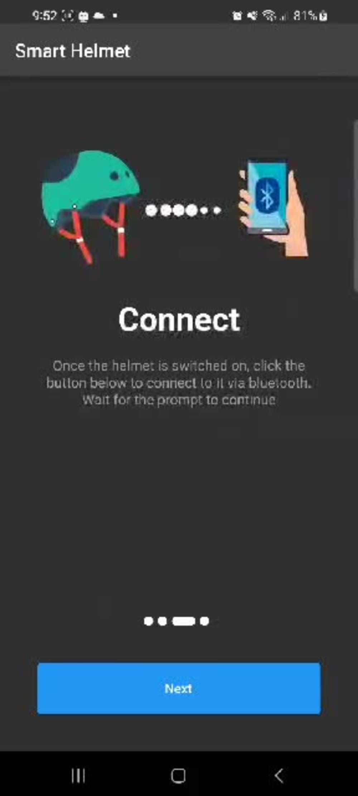

C# • ASP.NET Core • Angular • Azure • MySQL • SQL Server • REST APIs • Flutter • IoT
Senior Software Developer with 10+ years of experience building enterprise-grade web applications, POS systems, mobile applications, and business process automation solutions.
Specialized in C#, ASP.NET Core, Angular, SQL Server, and Azure, with strong experience in designing scalable backend systems, REST APIs, and database-driven applications.
Proven track record of delivering production systems for retail, logistics, and cooperative/government workflows with a focus on performance, usability, and maintainability.





Mobile: +63 926 783 0803
Email: gamilodindo017@gmail.com
LinkedIn: https://www.linkedin.com/in/dindogamilo/